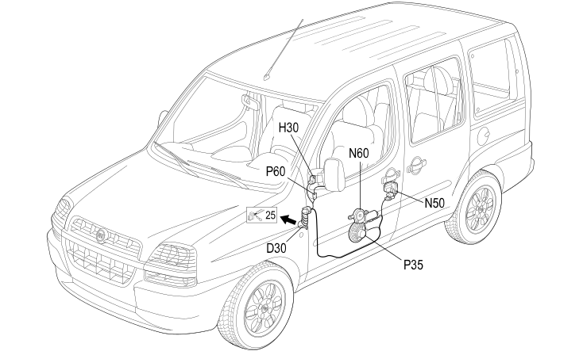

30 LEFT FRONT DOOR
- Path
- Electrical equipment > 2 WIRING > 30 LEFT FRONT DOOR
- Kind
- wiring harness
- Applies to
- engines: 1.2 8v, 1.6 16v, 1.9 JTD 8V, 1.9 DIESEL; all production periods
- Interactive page
- https://sloeber94.github.io/elrnDB-fDbl/en/#/223003794
Applies to: engines: 1.2 8v, 1.6 16v, 1.9 JTD 8V, 1.9 DIESEL; all production periods

Topics that link to this page (15)
- D030 REAR COUPLING FOR /FRONT DOOR. DRIVER'S SIDE (LEFT FRONT DOOR)
- D030 REAR COUPLING FOR /FRONT DOOR. DRIVER'S SIDE (LEFT FRONT DOOR)
- D030 REAR COUPLING FOR /FRONT DOOR. DRIVER'S SIDE (LEFT FRONT DOOR)
- D030 REAR COUPLING FOR /FRONT DOOR. DRIVER'S SIDE (LEFT FRONT DOOR)
- H030 ADJUSTABLE MIRROR CONTROL (LEFT FRONT DOOR)
- H030 ADJUSTABLE MIRROR CONTROL (LEFT FRONT DOOR)
- H044A ELECTRIC WINDOW CONTROLS ON FRONT DRIVER'S DOOR (LEFT FRONT DOOR)
- H044B ELECTRIC WINDOW CONTROLS ON FRONT DRIVER'S DOOR (LEFT FRONT DOOR)
- N050 RIGHT FRONT DOOR LOCK LEFT (LEFT FRONT DOOR)
- N060 FRONT LEFT ELECTRIC WINDOW MOTOR (LEFT FRONT DOOR)
- N060 FRONT LEFT ELECTRIC WINDOW MOTOR (LEFT FRONT DOOR)
- P035 SPEAKER ON FRONT DOOR LEFT (LEFT FRONT DOOR)
- P036 SPEAKER ON FRONT RIGHT DOOR (LEFT FRONT DOOR)
- P060 LEFT DOOR MIRROR (LEFT FRONT DOOR)
- P060 LEFT DOOR MIRROR (LEFT FRONT DOOR)